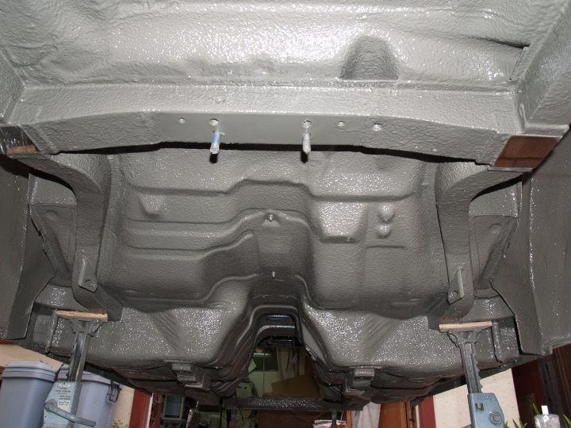

-
Well, I finally got around to up dating my frame rebuild page.
http://home.comcast.net/~gwmolitor/frame_repair.html
I now understand from another Z31 owner that the factory frame rails are
no longer available so this might be one way to fix those nasty "cancer"
issues.
 -
Re: Molitor's Frame Rebuild
Sweet! Thnak's Gary. I'm getting a quote this fall for Frame Rail repair.
-
Re: Molitor's Frame Rebuild
0 -
Re: Molitor's Frame Rebuild
That is some serious work. The foam to fill in the rails and seal them is simply awesome. I hope I can get this serious with my Z some day. Amazing.88 N/A 300zx (Slow....) -
Re: Molitor's Frame Rebuild
It's when you go this far with a car that you can never let it go, simply because nobody will ever appreciate, or can even fathom exactly how much work went into it.85 Z31 6.0 LSX turbo 766whp/792wtq
04 GTO, LS6, big cam, porting, N20… underway for summertime daily driver. -
Re: Molitor's Frame Rebuild
so where does the flux capacitor go? im sure your planning on doing some time travel at some point with that much work into it
-
Re: Molitor's Frame Rebuild
That is absolutely outstanding. And with the epoxy and detail of the work, you honestly can't tell it wasn't designed that way from the factory. Just beautiful, as your work always is.Originally posted by bronzemfp -
Re: Molitor's Frame Rebuild
I understood that the 300zx was a unibody?
OK, I'll stop being a dick. Hence forth I will try my best to stop making stupid posts in threads such as my "chinese rods out of U235" in serious threads.
Honestly, Nicely done. What SATAN says is true though, no one else (except maybe someone that is a Z31 freak like us, or maybe another TRUE car guy, the kind that can appreciate the love between man and the steel beasts) will truely appreciate the work going into it. Though I honestly love it. Just wish that color was a flat black.DSM's. Turning ordinary people into mechanics since 1989.
Z31's. Turning ordinary mechanics into machinists since 1984.
944's. Turning ordinary mechanics into lawyers since 1983. -
Re: Molitor's Frame Rebuild
great info right here.
I'm gonna do this later on when i do the 240Z rear suspension swap
he gives me shit all the time about the money i spend on my car but he simply doenst understand what type of "high" you get from watching a stock car transform into something alive with as much emotion and feelings as any human.Originally posted by PurePontiacKid -
Re: Molitor's Frame Rebuild
quoted for the plain and simple truth.SATAN wrote: It's when you go this far with a car that you can never let it go, simply because nobody will ever appreciate, or can even fathom exactly how much work went into it.
he gives me shit all the time about the money i spend on my car but he simply doenst understand what type of "high" you get from watching a stock car transform into something alive with as much emotion and feelings as any human.Originally posted by PurePontiacKid -
Re: Molitor's Frame Rebuild
Gary, i love what you have done with the car so far. I have been planning a frame rail project of my own. Going to cut out my rails like you have except replace them with thicker rectangular stock. When i cage the car the tubing will be welded through the floor pan directly to these rails.
240Z rear suspension??? Oh god… :-?New 2 Z wrote: great info right here.
I'm gonna do this later on when i do the 240Z rear suspension swapBolt on, fast, z31. You can only pick two.
Old weaksauce numbers: 391hp/433tq

-
Re: Molitor's Frame Rebuild
1artworkz wrote: Well, I finally got around to up dating my frame rebuild page.
http://home.comcast.net/~gwmolitor/frame_repair.html
I now understand from another Z31 owner that the factory frame rails are
no longer available so this might be one way to fix those nasty "cancer"
issues.
Ok Mister…what are you trying to hide with the "Painted Undercoating Look"? :lol:
*I can fully understand why you went the way you did, but really, with that much time into it, and for what you have planned for it...... "You didn't even LOCK the undercarriage frame work with a for the front and rear subframes".
*I'm sorry Gary, But with the amount of effort you put fourth, having been here and done that, seen first hand what the improvements were…you really should have followed what I had posted my results were(I know you asked me)…the ties alone make a huge difference in the feel of the car…which means that the design is improved and weakness in this area ELIMINATED. I know you chose to foam fill the channels vs. my method of using 1/8" plate and angle steel to re-enforce the front and rear rails....(those differences are prolly neglible), but ugh…Disappointed.
Those with serious track plans, and /or Drag duties…NEED TO LISTEN UP…and follow the advise of those who have done this. Foam filling (potentailly/possibly) or (what I have experience with…)plating the frame rails for stiffening the chassis leads for exceptional results…however, TIE in the subframes with some 1/8" steel and WOW!!!!.....It is almost like the improvements that are had from adding a "8 point cage" all by itself....
I'm, just a Little let down.
Dan :-?
-
Re: Molitor's Frame Rebuild
doesn't paint like chip if it hits something too hard?
he gives me shit all the time about the money i spend on my car but he simply doenst understand what type of "high" you get from watching a stock car transform into something alive with as much emotion and feelings as any human.Originally posted by PurePontiacKid -
Re: Molitor's Frame Rebuild
New 2 Z wrote: doesn't paint like chip if it hits something too hard?
Yes, However.....In 3 Years of use and a little over 4500 miles....What you see pictured, still looks "almost" like it did the day I did it. Primary use/mileage is paved roads, and the car is a show/performance build use car.
Quoted from the response....
*I can fully understand why you went the way you did, but really, with that much time into it, and for what you have planned for it......
-
Re: Molitor's Frame Rebuild
Dan; your work on that car has always impressed me. I really like the clean look of the under-bodyAeLadyZ aka Dan :-? wrote: [b]Ok Mister…what are you trying to hide with the "Painted Undercoating Look"? :lol: … snip
without the undercoating. That look is a real show winner.
These are the reasons I chose to do it this way … RUST was my primary focus.
⢠Replace and streghten rusted frame rails with heavier gauge steel and structural foam.
⢠Seal all areas of potential water entry into frame rails with moisture-cure elastomeric sealant.
⢠Add to the factory sound deadening and apply a hard protective coating to approximate factory color.
When I started this project I considered adding the you used. However, after consulting a structural
engineer (Z31.com member), his opinion was, the added little to the over all stiffness or rigidity of
the frame members when considering the unitized body as a whole.

Copyright © 2006–. All rights reserved. Privacy Policy